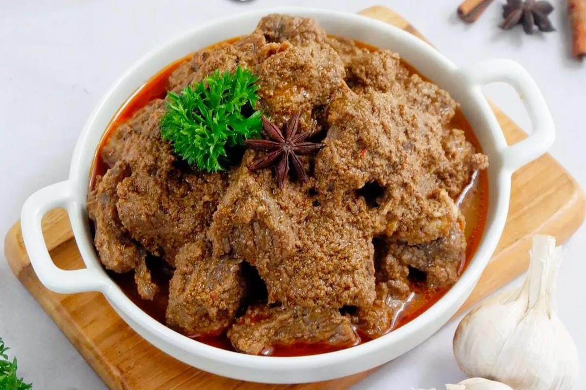

Beef Rendang

Descriptions :
Beef rendang is one of the original cuisines of Minangkabau descent and Sumatra’s culture. It is served at special occasions to honor guests and during festive seasons. It is a delicious Indonesian dish prepared with a myriad of herbs and spices cooking for a few hours until all the liquids have been completely absorbed by the meat. Beef rendang is best eaten with steamed rice and condiments such as fried onions and chili pieces.
Ingredients :
- Royco Bumbu Rempah Serbaguna 525g
- Beef 500 g
- Red Chilli 50 g
- Coconut Milk 500 ml
- Lime Leaves 6 pc
- Tumeric Leaf 2 pc
- Bay Leaf 3 pc
- Lemongrass 1 pc
Instructions :
- Heat Oil. Put in red chili, turmeric leaves, bay leaves, lime leaves, and lemongrass.
- Add Royco Spice Base Rendang. Stir until well blended.
- Add beef. Stir until the meat changes color.
- Add the coconut milk, mix well.
- After boiling and become kaleo, stir occasionally so as not to burn.
- Stir the rendang until it turns out the oil, the colour becomes red.
- Stir the rendang until the color turns to black.
- Turn off the heat, lift, and serve.